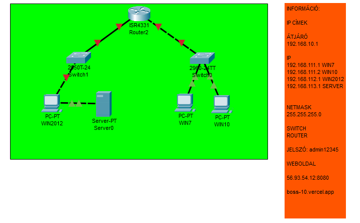

Bevezető
Ebben a projektben a tanulók megismerkednek a Windows szerverek verzióival és telepítési módjaikkal, miközben létrehoznak egy hierarchikus kisvállalati hálózatot.
Virtuális Gépek és Szerver Telepítése
Ez a szakasz bemutatja, hogyan hozhatsz létre virtuális gépeket VirtualBox-ban, és hogyan telepítheted a Windows 2012 szervert.
DHCP Beállítás
Ismertetjük, hogyan konfigurálhatod a DHCP szolgáltatást a szervered és a kliensek közötti IP-címek kiosztásához.
Tesztelés
Miután befejeztük a beállításokat, teszteljük, hogy minden megfelelően működik-e.
Dokumentáció
A projekt során végrehajtott lépések teljes dokumentációja letölthető.
📥 LetöltésBemutatás
A projekt során végrehajtott lépések teljes dokumentációja letölthető.
